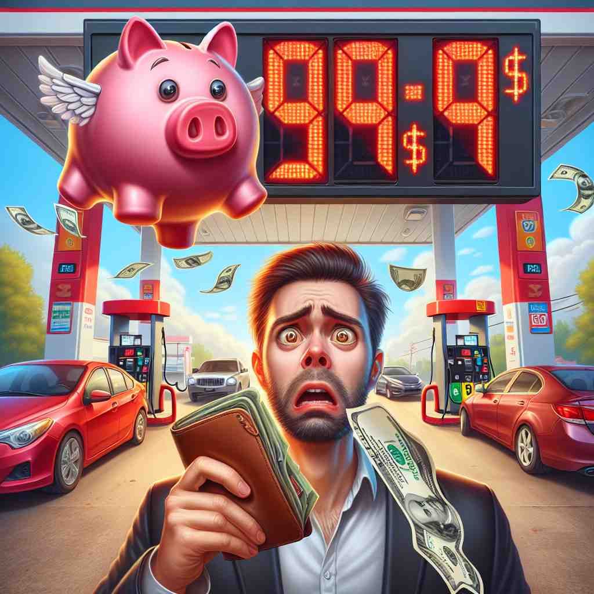

💬 I need to check the price before I buy the book.
💬 The price of the shirt is written on the tag.

💬 The gas price is displayed as $99.9 on the board.

💬 The woman wants to know the price of the bread she is buying.
🔈 [praɪs]
🗝️ n. the amount of money that you must pay to buy something
🖼️ 在一个繁华的购物商场，琳达正站在一个电子产品专柜前。她望着一个崭新的智能手机，标签上清楚地写着：$799。这便是买下它所需支付的价格。
🔍 通过联想'price'的核心含义——物品的金钱价格，可以轻松理解其他含义。无论是付出的代价、物品的价值、定价行为还是询价过程，都与这个核心概念密切相关。记住'price'就像在脑海中贴上一个价格标签，这个标签不仅显示金钱数字，还反映了事物的价值和获得它所需付出的努力。
💬 I need to check the price before I buy the book.
💬 The price of the shirt is written on the tag.
💬 The gas price is displayed as $99.9 on the board.
💬 The woman wants to know the price of the bread she is buying.
🌳 由词根 "preti-"（拉丁语，意为价值）演变而来，表示商品或服务的价格或价值。
💡 可以将 "price" 联想为商品的 "价值"，记住价格与价值相关联，进而记住其含义。当看到带有 "price" 的词汇时，考虑与价格或价值的关系，能更好地理解词义。
🗝️ n. the cost or sacrifice required to achieve something
🖼️ 想象一个年轻人在繁忙的工作环境中，他每天加班到深夜，以期在公司里获得晋升。这就是他为事业而支付的代价。
💬 He achieved success, but at a great price to his health.
❓ 从金钱价格引申为达成目标所需付出的代价
🗝️ n. the value or worth of something
🖼️ 在一场古董拍卖会上，拍卖师正在展示一件珍贵的维多利亚时代的瓷器。竞拍者争相出价，因为他们都看中了这件藏品所蕴含的巨大价值。
💬 The price of gold fluctuates daily in the market.
❓ 价格反映了物品的价值
🗝️ v. to set or determine the price of something
🖼️ 在一个小型的街边市场，摊主正在给新到的水果标价。他小心计算成本，决定该以何种价格出售这些水果。
💬 They priced the new product competitively.
❓ 由名词转化为动词，表示定价行为
🗝️ v. to ask about the price of something
🖼️ 在一个时尚的精品店里，顾客指着一件漂亮的连衣裙问店员："请问这件裙子多少钱？" 她正在询问裙子的价格。
💬 I priced several laptops before making a decision.
❓ 询问某物的价格，源于对价格的关注
🗝️ adj. beyond or without price (priceless)
🖼️ 在一个温馨的家庭场景中，祖母微笑着把她年轻时的相册递给孙女。孙女翻阅着那些充满回忆的照片，明白这些情感和记忆是无价的。
💬 The ancient artifact is of priceless value to historians.
❓ 价格概念延伸至无法用金钱衡量的珍贵程度